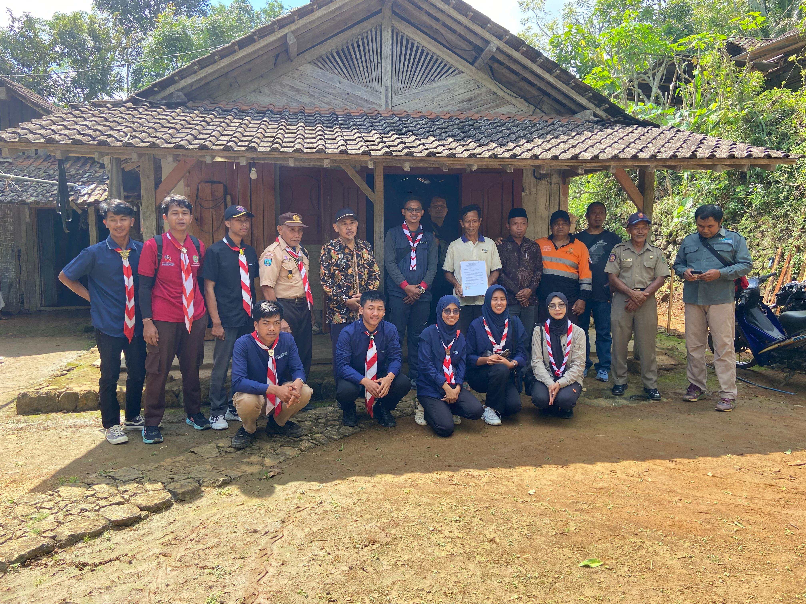

Dewan Kerja Ranting Pule mengikuti kegiatan Sidparcab Trenggalek Tahun 2025 bersama delegasi dari Kwartir Cabang.
Baca SelengkapnyaSelamat Datang di Kwarran Pule
Website resmi Kwartir Ranting Pule sebagai pusat informasi, dokumentasi, dan komunikasi kegiatan kepramukaan di wilayah Kecamatan Pule.
- Pembinaan karakter generasi muda
- Publikasi program dan kegiatan Pramuka
- Basis data dan informasi Gugus Depan

Galeri Kegiatan


Tentang Kwarran Pule
Apa itu Kwartir Ranting?
Kwartir Ranting (Kwarran) adalah struktur organisasi Gerakan Pramuka di tingkat kecamatan yang bertugas melaksanakan pembinaan, pengembangan, serta pengawasan kegiatan kepramukaan di Gugus Depan.
Kwarran Pule merupakan bagian dari Kwartir Cabang Trenggalek yang bertanggung jawab membina Gugus Depan di wilayah Kecamatan Pule. Kami mendukung pelaksanaan kegiatan Pramuka dari tingkat Siaga hingga Penegak.
Visi
- Mewujudkan Gerakan Pramuka sebagai wadah pembentukan karakter generasi muda yang beriman, bertakwa, dan berdaya saing.
Misi
- Meningkatkan kualitas pembina dan peserta didik melalui pelatihan serta kegiatan berkelanjutan.
- Menjalin kemitraan strategis dengan berbagai pihak untuk mendukung kegiatan kepramukaan.
- Mengaktifkan peran Gugus Depan dalam kegiatan sosial, pendidikan, dan pelestarian lingkungan.
- Mendorong terciptanya Pramuka yang kreatif, inovatif, dan peduli terhadap masyarakat.
Berita & Kegiatan
üìÖ 18 April 2025

üìÖ 12 Juni 2025
Tim dari Kwarda Jawa Timur dan Kwarcab Trenggalek melakukan survei lokasi Rumah Tidak Layak Huni (RTL) untuk program pemugaran.
Baca SelengkapnyaHubungi Kami
üè† Alamat: Sekretariat Kwarran Pule, Jl. Raya Pule No. 10, Trenggalek, Jawa Timur
üì± Telepon / WhatsApp: Klik untuk Chat via WhatsApp
üìß Email: kwarranpule@gmail.com